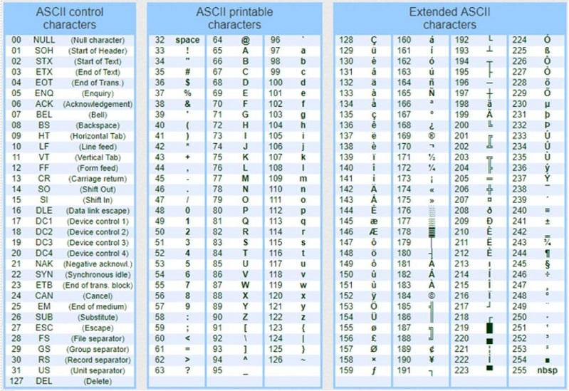
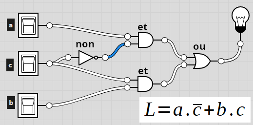
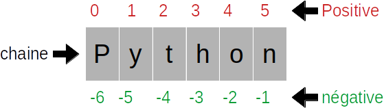
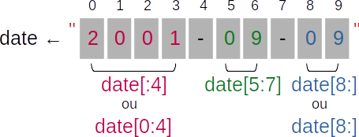
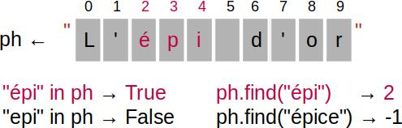
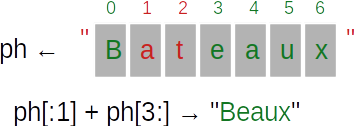
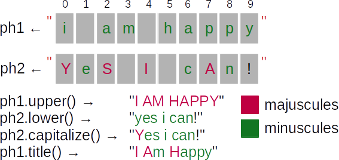
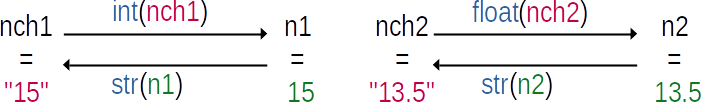

Copier/coller, puis tester le programme. Qu'est ce qu'il affiche ?
En déduire le rôle de la fonctions ord(car).
Conversion MAJ → min
Exercice
Ecrire l'algorithme d'un programme qui convertit une lettre majuscule en minuscule en utilisant les fonctions
chr(code) et ord(car). Traduire l'algorithme en Python.
Quelle est la modification à apporter à cet algorithme pour convertir une lettre minuscule en majuscule ?

Table ASCII
Goodbye / Byebye
On donne le programme suivant :
Copier/coller et tester le programme. Puis répondre aux questions ci-dessous :
Compléter le code la partie 4 pour extraire chacun des autres mots depuis ch7.
Quel est l'équivalent de l'instruction ch[d:f] en algorithme ?
Former la phrase "Rêver - créer - inspirer" à partir de ch7. Donner l'instruction Python
puis l'instruction algorithmique.
Partie 5 :
# Partie 5
ch8 = "God bless you."
p1 = ch8.find("e")
p2 = ch8.find("E")
p3 = -1
print("'e' est trouvée à la position", p1)
print("'E' est trouvée à la position", p2)
print("'you' est trouvée à la position", p3)
Quelle est la fonction de la méthode find dans les expressions p1 et
p2 ? Quel est son équivalent algorithmique ?
Retrouver la position du mot 'you' dans la chaîne ch8.
Modifier l'expression ch10 afin de retrouver le mot "partaire".
Modifier l'expression ch11 afin de retrouver "beaux bateaux".
Partie 7 :
# Partie 7
ch12 = "yes we can"
ch12 = ch2.upper()
print(ch12)
Quelle est la valeur de ch12 ? Que fait la méthode upper() ?
Transformer le code ci-dessus en algorithmique.
Donner une expression algorithmique qui permet d'affecter "Yes We Can en utilisant les
fonctions sous_chaine et majus. Traduire en Python.
Les pangrammes
Soient la variable pgm suivante :
pgm ← "Voix ambiguë d’un cœur qui, au zéphyr, préfère les jattes de kiwis"
// 1 2 3 4 5 6
// 012345678901234567890123456789012345678901234567890123456789012345
Composez votre prénom de la même manière que ph1 ?
// (2)
prenom ← ""
Ecrire(ph1)
Utiliser la fonction Pos pour déterminer la position du mot "un" dans la
variable pgm. Puis, utiliser la même fonction pour retrouver la position du mot
"de".
// (3)
p1 ← -1
// (3)
p2 ← -1
Composer dans ph2 la phrase "un cœur de kiwi" en utilisant la fonction
sous_chaine et les indices p1 et p2.
// (4)
ph2 ← ""
Ecrire(ph2)
Supprimer les caractères inutiles de ph2 afin de retrouver "un kiwi" dans
ph3.
// (5)
ph3 ← ""
Ecrire(ph3)
Utiliser les fonctions adéquates pour insérer le mot "délicieux" dans ph3 afin
de composer la phrase "un délicieux kiwi".
// (6)
mot ← "délicieux"
ph4 ← ""
Ecrire(ph4)
Halloween & les Bonbons
Déguisement et Bonbons pour Halloween
A l'occasion du Halloween, Samer et ses deux soeurs aînées Sarra at Samar se déguisent pour le Halloween. Le
soir, ils visitent les maisons du quartier tout en chantant. Les voisins, très reconnaissants pour le geste,
remplissent leur citrouille de bonbons et de friandises.
À la fin du soirée, les trois enfants à la maison, partagent leur butin. Chaque enfant doit avoir le
même nombre de bonbons, le reste est partagé entre la mère et le père.
Pour une distrubtion équitable des friandises leur père a écrit l'algorithme' suivant :
Algorithme halloween
Début
Ecrire("Nombre total de bonbons ? ") ; Lire(nb)
Ecrire("Nombre d'enfants ? ") ; Lire(nbe)
// A calculer
nbpe ← 5 // Nombre de bonbons par enfant
nbr ← 1 // Nombre de bonbons restants
Ecrire("Nbre de bonbons par enfant :", nbpe)
Ecrire("Nbre de bonbons restants :", nbr)
Fin
On demande de :
Dresser le TDO de cet algorithme.
Modifier l'algorithme pour qu'il calcule le nombre de bonbons par enfant, ainsi que le nombre de bonbons
restants.
Traduire l'algorithme en Python.
Logic gates
Soit le circuit logique ci-après :

Portes logiques
Ecrire l'équation logique de la lampe L en fonction des entrées logiques a,
b et c.
On donne l'algorithme incomplet suivant qui permet de simuler ce circuit :
Algorithme Logic_gates
Début
// etat est une chaîne contenant trois lettres
// "V" bouton fermé / "F" bouton ouvert
Ecrire("Etat des boutons") ; Lire(etat)
etat ← majus(etat)
// Vrai si le bouton est fermé
a ← etat[0] = "V"
b ← etat[1] = "V"
c ← etat[2] = "V"
// Equation logique de L
L ← Faux
Ecrire(a, ",", b, ",", c, "=>", L)
Fin
Traduire l'algorithme en Python tout en le complétant.
Dresser la table de vérité du circuit. Puis, remplir la colonne L.
etat
L
FFF
FFV
FVF
FVV
VFF
VFV
VVF
VVV
Résumé
Type Caractère
Un caractère peut-être :
Une lettre alphabétique majuscule : "A", "B", ..., "Z"
Une lettre alphabétique minuscule : "a", "b", ..., "z"
Un chiffre : "0", "1", ..., "9"
Un symbole : " ", "!", "\"", "#", etc.
Chaque caractère possède un code normalisé appelé :
Code ASCII pour les 256 premiers caractères (voir table ASCII)
Code Unicode au dela des 256 premiers caractères.
Table ASCII
Fonction
Rôle
Exemple
ord(car)
Retrouver le code ASCII/Unicode d'un caractère.
car = "A"
num = ord(car) # num = 65
chr(num)
Retrouver le caractère correspondant à un code ASCII/Unicode.
num = 64
car = chr(num) # car = "@"
Type chaîne de caractères
Une chaîne de caractères est formée par un ensemble de caractères.
Longueur
Une chaîne possède une longueur qui indique le nombre de ses caractères. On utilise la
fonction len(chaine) pour déterminer la longueur d'une chaîne.
Une chaîne de longueur zéro est appelée chaîne vide. Elle est notée "" ou
'' et len("") → 0.
Concaténation
Une chaîne peut être le résultat de concaténation de deux ou plusieurs chaînes
"Sa" + "mi" → "Sami".
Indexation
On peut accéder aux caractères individuels d'une chaîne à travers l'opérateur
[]. Une chaîne peut-être indexée de deux façons différentes.

Indexation d'une chaîne de caractères
D'après la figure précédente, on peut retrouver le premier caractère de la chaine soit en
utilisant l'indexation positivechaine[0] soit en utilisant l'indexation
négativechaine[-6].
Sous chaîne
On peut extraire une partie de la chaîne en utilisant l'opérateur [:].

Extraction d'une sous-chaîne
Pour extraire une partie d'une chaîne on écrit chaine[deb:fin]. Cette instruction extrait les
caractères compris entre les indices deb inclu et fin non inclu,
deb est l'indice de début, et fin est l'indice de fin.
Recherche de position
Pour retrouver la position d'une sous-chaine sch dans une chaine ch on écrit
ch.find(sch), cette instruction retourne la première occurence de sch dans
ch, ou -1 si elle est introuvable.
Recherche d'existence
Pour tester l'existance d'une sous-chaîne sch dans une autre chaine ch, on écrit
sch in ch. Cette expression renvoie un booléen : True / False.

Recherche dans une chaîne
Effacer une sous-chaîne
Il n'existe pas une instruction Python pour effacer une partie d'une chaîne. Cependant, il
est possible d'utiliser une concaténation de sous-chaines.
Pour effacer la partie comprise entre les indices deb (inclu) et fin (non inclu)
dans une chaine, on écrit chaine[:deb] + chaine[fin:].

Effacer une sous-chaîne
Changer la casse
Python offre plusieurs méthodes pour changer la casse d'une chaine de
caractère, voici quelques-unes.
chaine.upper() : Convertit toute une chaine en
majuscules.
chaine.lower() : Convertit toute une chaine en
minuscules.
chaine.capitalize() : Met la première lettre en majuscule et les toutes autres en minuscules.
chaine.title() : Convertit la première lettre de
chaque mot en majuscules.

Modifier la casse d'une chaîne
Conversions
Une chaîne qui contient une valeur numérique peut-être transformée en un
entier à
l'aide de la fonction int(chaine) ou en un réel à l'aide de la fonction
float(chaine). La fonction str(nombre) est utilisée pour convertir un
entier ou un réel en une chaîne de caractères.

Conversions d'une chaîne
La conversion d'une chaîne qui ne contient pas une valeur numérique produit une erreur
d'exécution qui peut interrompre l'exécution d'un programme pour cela on peut utiliser la fonction
chaine.isdigit() pour tester si une chaine contient uniquement des chiffres.
Type entier
Le type entier couvre une partie de l'ensemble des entiers relatifs ℤ, c'est à dire l'ensembles des
entiers positifs 0, 1, 2, 3, etc. et des entiers négatifs -1, -2, -3, etc.
Les opérateurs possibles avec les entiers sont :
L'addition8 + 5 → 13
La soustraction8 - 5 → 3
La multiplication8 * 5 → 40
La division réelle8 / 5 → 1.6
Le quotient de la division entière8 // 5 → 1
Le reste de la divion entière18 % 7 → 4
L'exponentiation5 ** 3 → 125
Voici quelques fonctions possibles avec les entiers :
La valeur absolueabs(-9) → 9
Choix d'une valeur aléatoire dans un intervalle
randint(1, 6) → une valeur au hasard dans l'intervalle [1, 6].
Attention Pour utiliser randint(a, b), il faut veiller à importer cette fonction du module
random via l'instruction
from random import randint.
Type réel
Le type réel couvre une partie de l'ensemble des réels ℝ, c'est à dire les nombres à virgule flottante.
Certaines fonctions avec les réels doivent être importées depuis le module math. Parmi ces
fonctions on cite :
La racine carrésqrt(5) →
La partie entière d'un réel trunc(6.2545) → 6
Type booléen
Les variables de ce type peuvent prendre uniquement les deux valeurs True ou False.
On utilise les opérateurs de comparaison pour comparer des valeurs de mêmes types ou de
types compatibles :
Opérateur
Description
<
Inférieur
<=
Inférieur ou égal
>
Supérieur
>=
Supérieur ou égal
==
égal
!=
Différent
On utilise les opérateurs logiques pour construire des expressions booléennes plus
sophistiquées.
Opérateur
Description
not a
Négation logique, si a est vraie not a est fausse, sinon
not a
est vraie.
a and b
Et logique, a and b est vraie uniquement lorsque a est vraie et
b est vraie.
a or b
Ou logique, a or b est fausse uniquement lorsque a est fausse et
b est fausse, elle est vraie lorsque l'un des opérandesa
ou
b est vrai.
Tables de vérité
Opérateur unaire
a
not a
False
True
True
False
Opérateurs binaires
a
b
a and b
a or b
False
False
False
False
True
False
False
True
False
True
False
True
True
True
True
True
Priorité des opérateurs
Les opérateurs logiques sont ordonnés dans le tableau précédent selon leurs priorités
respectives.
Il est vivement conseillé d'utiliser les parenthèses pour imposer l'ordre
d'évaluation des opérateurs.
Exemple, l'expression not a or b and c est évaluée comme suit (not a) or (b and c).
Si on veut écrire not ((a or b) and c) ou (not (a or b)) and c , il faudra utiliser
impérativement les parenthèses.
Comparaison des variables de type de numérique
Pour les entiers et les réels a > b si et seulement si a - b > 0,
a == b si et seulement si a - b == 0.
Comparaison des caractères et des chaînes de caractères
La comparaison pour les caractères est basée sur le code ASCII/Unicode.
Un site propose des pseudonymes automatisés lors de la création d'un compte.
Le pseudonyme est composé par les trois premières lettres du nom de l'utilisateur suivies par la longueur du
nom, les trois dernières lettres du prénom suivies par la longueur du prénom, le tout est succédé par un
nombre aléatoire de 2 chiffres.
Nom & Prénom ? Sami Ben Salah
Pseudonyme proposé : SAM4_LAH9_31
Le plus âgé
Le plus âgé
On veut faire un programme qui détermine si une personne est plus âgée qu'une autre. Pour cela on donne le
programme incomplet suivant :
nom1 = input("Nom de la 1ère personne ? ")
age1 = input("Âge de " + nom1 + " ? ")
nom2 = input("Nom de la 2ème personne ? ")
age2 = input("Âge de " + nom2 + " ? ")
c1 = age1 > age2
print(nom1, "est plus âgé que", nom2, "?", c1)
On demande de tester le programme à l'aide des valeurs suivantes. Est-il correct ? Quel est le problème ?
Comment le
corriger ?
nom1
age1
nom2
age2
Abderrazek
9
Hala
3
Emna
73
Abderrazek
9
Conjugaison au présent
Ecrire l'algorithme un programme qui conjuge un verbe de 1er groupe au présent.
Donner un verbe de 1er groupe ? manger
Je mange
Tu manges
Il/Elle mange
Nous mangons
Vous mangez
Ils/Elles mangent
Nombre automorphe
Un nombre automorphe est un entier naturel dont la suite des chiffres du carré se termine
par celle du nombre lui-même. Par exemple,
On veut écrire l'algorithme d'un programme qui teste si un nombre est automorphe.
English calendar
Les français expriment les dates de la façon suivante : jj/mm/aaaa, alors que les anglais l'expriment d'une autre façon : mm/jj/aaaa.
Ecrire l'algorithme d'un programme qui convertit les dates du calendrier français au calendrier anglais.
Date au format jj/mm/aaaa ? 24/08/1983
24/08/1983 is 08/24/1983 in english calendar.
Division Euclidienne
Tout nombre entier positif n ∈ ℕ peut être exprimé sous la forme :
n = p.q + r
Avec p > 0, q ≥ 0 et 0 ≤ r < p
On veut écrire l'algorithme d'un programme qui, pour deux entiers n et p donnés,
calcule et
affiche la valeur de q et r.
Donner n ? 25
Donner p ? 11
25 = 11 . 2 + 3
Donner n ? 18
Donner p ? 7
18 = 7 . 2 + 4
Chronomètre
Chronomètre
Un chronomètre présente une durée au format "h:mm:ss", voir figure. On veut retrouver ce que cette valeur
représente en secondes.
Ecrire l'algorithme d'un programme pour réaliser cette tâche.
Affichage du chronomètre ? 1:10:50
1:10:50 vaut 4250 secondes
Affichage du chronomètre ? 02:34:20
02:34:20 vaut 9260 secondes
Permutation de chiffres
Ecrire l'algorithme un programme qui saisit un nombre de 4 chiffres, puis permute le chiffre des centaines
avec celui des
milliers et le chiffre des dizaines avec celui des unités.
1374 → 3147
-
1005 → 0150
Proposer deux méthodes de résolution :
Une solution arithmétique.
Une solution en utilisant les fonctions de manipulation des chaînes.
Nombres voisins
Deux nombres sont dits voisins si le dernier chiffre du premier nombre est égal au premier chiffre du second
nombre.
1234 et 4200 /
67 et 730 /
730 et 67
Les deux premiers exemples présentent deux nombres voisins, le troisième d'un exemple de nombre non voisins.
Donner a ? 67
Donner b ? 730
67 et 730 sont voisins ? True
Donner a ? 730
Donner b ? 67
730 et 67 sont voisins ? False
Consommation de carburant
Indicateur de niveau du carburant et Indicateur de kilométrage
Un automobiliste surveille la consommation en carburant de sa voiture pour faire une maintenance préventive
en cas de besoin.
Le matin, son réservoir initialement vide, il fait le plein de nd litres de carburant. A cet
instant, il a parcouru dd kilomètres.
Le soir, l'indicateur de niveau de carburant indique nf litres et l'indicateur de kilométrage
indique df kilomètres.
On demande d'écrire l'algorithme d'un programme qui saisit les données puis calcule le taux de consommation
de la voiture en
litres/100km.
taux = consommation / distance
Le matin
Niveau de carburant ? 30
Nombre de km parcourus ? 3000
Le soir
Niveau de carburant ? 10
Nombre de km parcourus ? 3200
La voiture a consommé 20 litres pour 200 km
La voiture a consommé 10.0 l/100km
Le matin
Niveau de carburant ? 10
Nombre de km parcourus ? 100
Le soir
Niveau de carburant ? 8
Nombre de km parcourus ? 127
La voiture a consommé 2 litres pour 27 km
La voiture a consommé 7.4 l/100km
Plein de zéros
Ecrire l'algorithme d'un programme qui saisit un nombre de 2 chiffres, puis insère autant de zéros que la
différence entre
ses chiffres de dizaines et d'unités.